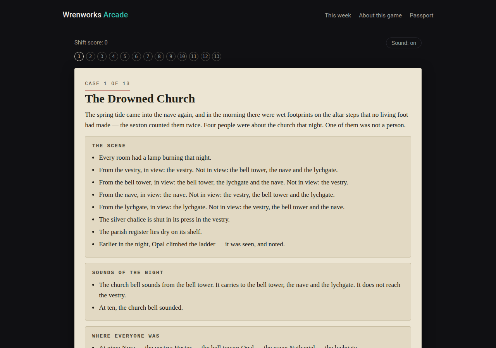
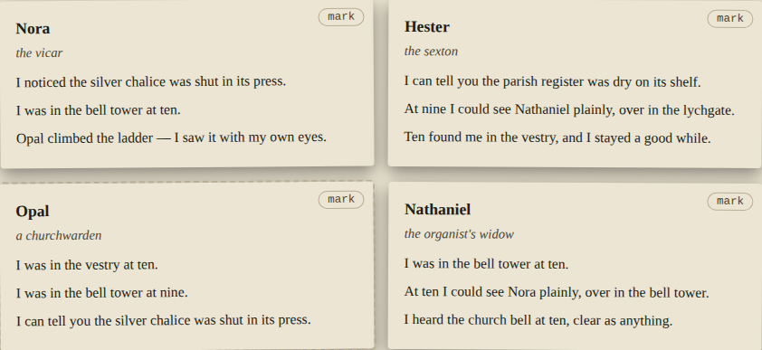
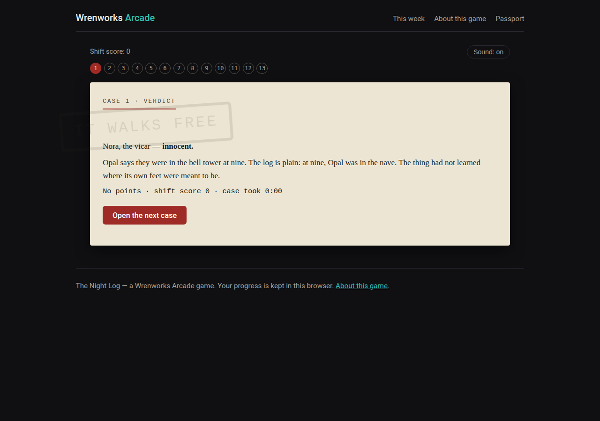

Week 1 · Paranormal deduction
The Night Log
You are the night investigator. A shift is twelve cases and a finale, and every case is a file: the scene as it was found, the sounds of the night, where everyone was at each bell — and four witness testimonies, taken down word for word.
Three of the witnesses are people. The fourth is the thing wearing a person's shape, and it always gives itself away the same way: somewhere in its testimony is one detail that could not be true. A room seen from a room that cannot see it. A bell heard through a sealed wall. A pair of hands doing work they cannot do. Your job is to read carefully and name it.
One name per case, and a wrong name closes the case — the thing walks free and the medal ladder remembers. There is no timer on a case. Across the shift your journal fills with what the thing cannot do, and in the last case the journal itself is the evidence.



How it plays
- A shift: 12 cases and a finale. Most players finish in half an hour to an hour.
- Medals: bronze at 7 cases named, silver at 9, gold at 11 — and the Wren medal for a flawless shift with the right ending.
- The hard shift: two things in every case file, and both must be named.
- Today's case: one case, new every day, on its own board — the short version, for days when a whole shift is too much.
- Replay: every shift is generated fresh — different places, different witnesses, different lies. No two shifts tell the same cases.
The shift board
This board is your own record, kept in your own browser.
No finished shifts yet. The first line of this board is still to be earned.
When this game goes into the Vault
While The Night Log is the current game, this page is its home. When the next game arrives, this page stays — the board above becomes final, the comments stay, and the play button goes. If you want it back, say so in the comments or in a reply to the Friday email — we read them all.
Comments
Comments open when the arcade launches. Until then, the like button above is the quickest way to say the game earned its week.